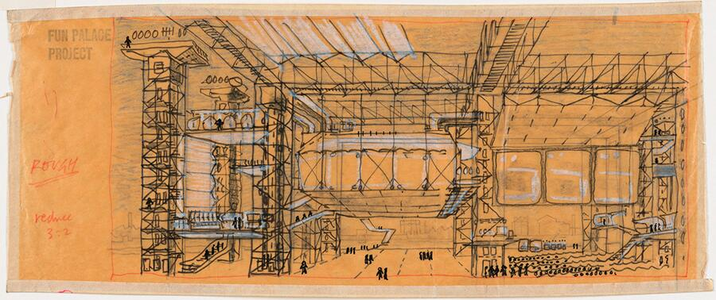
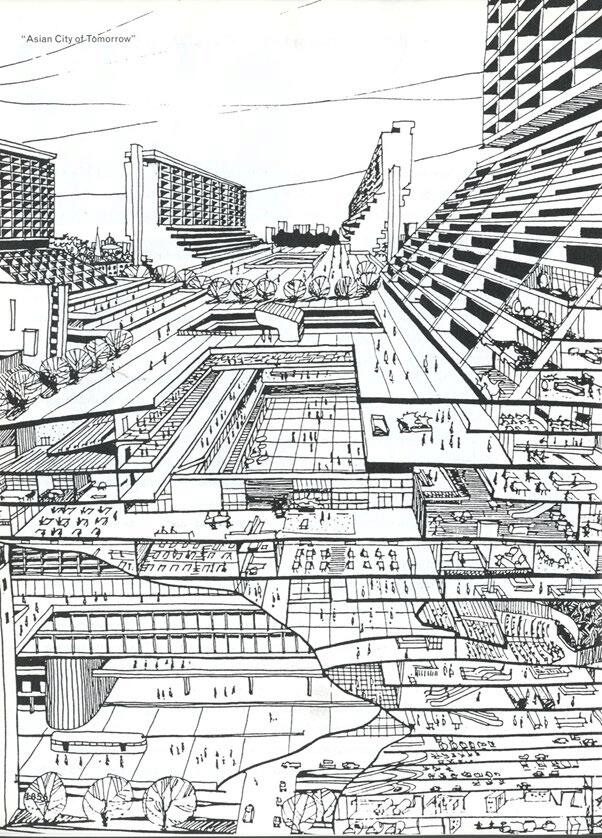
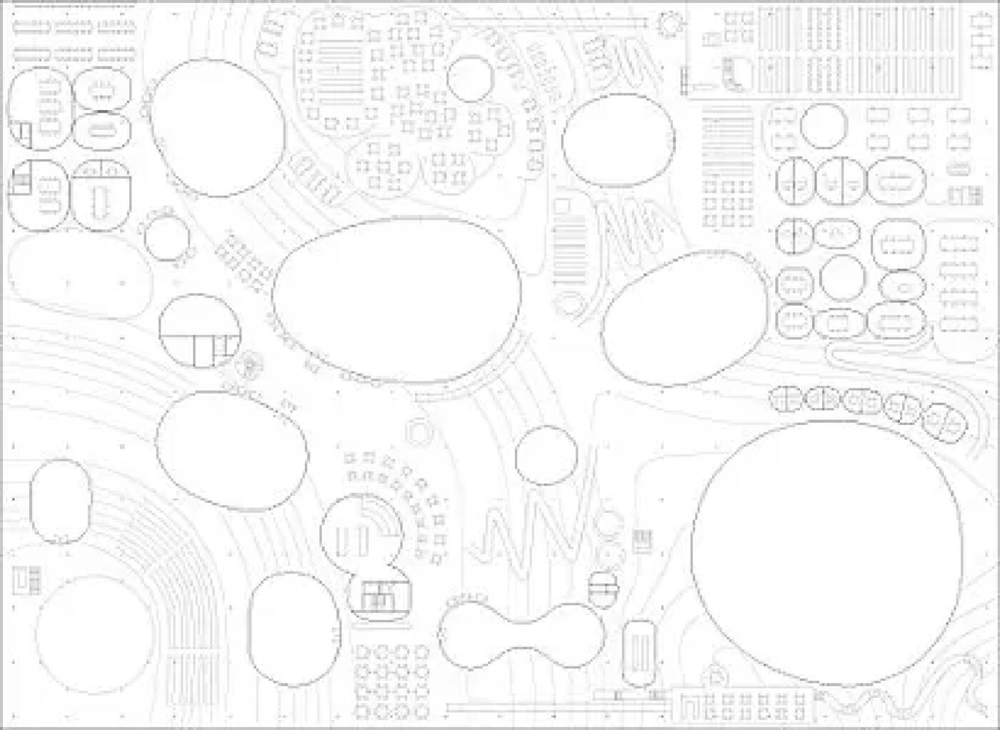
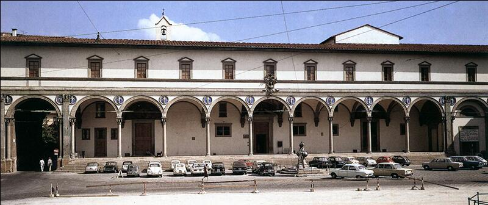
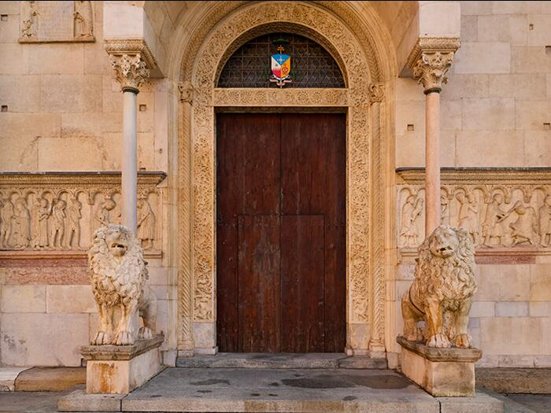
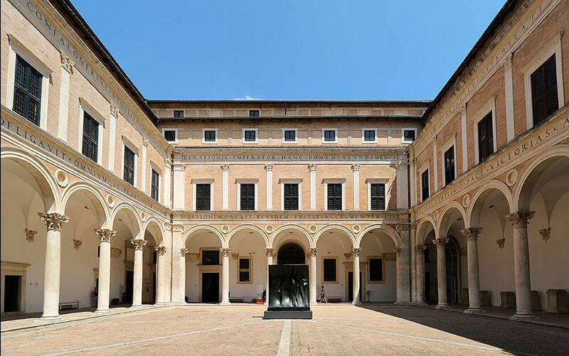
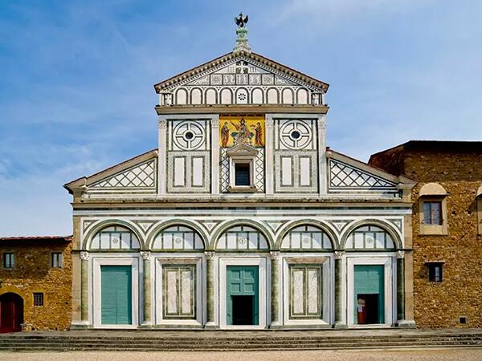
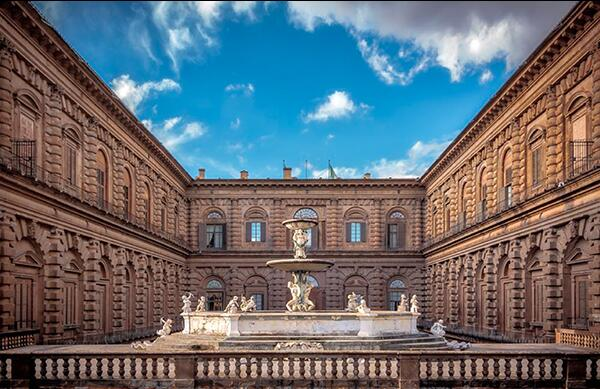
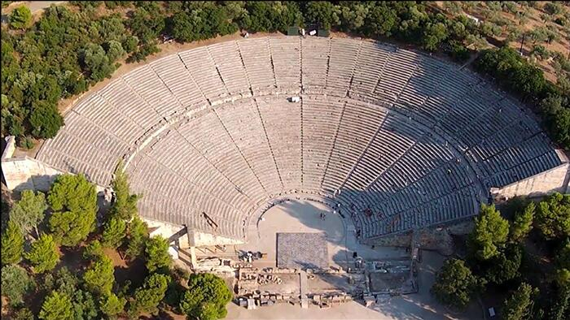
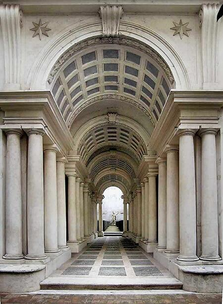

La mappa del progetto:
il campo come sistema complesso
Una forma architettonica nasce da un campo di relazioni, non da un oggetto isolato. La mappa progettuale è il luogo in cui queste relazioni prendono forma: flussi, intensità, gerarchie, nodi, soglie. Ogni elemento si definisce nella rete che lo connette agli altri. Costruire un progetto significa prima costruire un campo strutturale: un sistema interdipendente in cui tutto è in relazione.

Il Fun Palace non è un’architettura in senso tradizionale, ma una mappa operativa. Cedric Price trasforma il progetto in un sistema di relazioni: una griglia aperta d’acciaio, gru a ponte, moduli mobili (pavimenti, pareti, scale, attrezzature) che si riconfigurano nel tempo. La forma non viene fissata: emerge come comportamento del campo quando persone, tecnologie e attività interagiscono. È la logica che la scheda sinottica della Lezione 7 rende visibile: prima della figura sta il campo complesso e governabile delle dipendenze, delle intensità e dei flussi.
La collaborazione con Gordon Pask introduce la cibernetica: il progetto è concepito come sistema adattivo, capace di “apprendere” dagli usi e di variare in risposta ai desideri mutevoli degli utenti. Anche gli strumenti di rappresentazione riflettono questa impostazione: diagrammi PERT, schemi funzionali, reti decisionali. Le linee non disegnano muri: tracciano vettori, nodi, feedback, cioè le condizioni di funzionamento del campo. L’utente non è spettatore, ma co–autore: manipola lo spazio, programma eventi, riconfigura assetti. Per Price questa è “non–architettura”: non un oggetto da contemplare, ma un generatore di possibilità.
Nel quadro della Lezione 7, il Fun Palace è esemplare perché sposta l’attenzione dalla forma finita alla struttura relazionale che rende la forma possibile, trasformabile, coerente pur nel cambiamento. La “didascalia” del progetto non è un prospetto o una pianta, ma il diagramma del sistema: ciò che consente di leggere componenti e variabili, di governarne le interdipendenze e, soprattutto, di far sì che il progetto resti aperto senza perdere identità.

Direzioni fluide, campi vettoriali, traiettorie che orientano il corpo
Ad Atlanta OMA abbandona la rappresentazione oggettuale della città per trattarla come sistema di forze. I diagrammi non disegnano edifici ma vettori: autostrade, rampe, parcheggi, linee di scambio, corridoi commerciali, flussi di persone e capitali. La città emerge come centerless city, priva di un nucleo dominante; al suo posto, quasi-centri prodotti da infrastrutture e da complessi immobiliari autosufficienti. La forma urbana non coincide con il perimetro costruito: è un campo di relazioni che si ridistribuisce dove si addensano accessibilità, consumo, comunicazione.
La cartografia diagrammatica diventa uno strumento di indagine e di decisione: stratifica dati, rende confrontabili fenomeni eterogenei, visualizza gerarchie e dipendenze (tempi di percorrenza, raggi d’influenza, isocrone, colli di bottiglia). In questo linguaggio asciutto, “Bigness” non è un’icona ma un operatore che deforma reti, protocolli e flussi, generando nuove polarità e nuove esclusioni. L’urbanistica è letta come competizione tra infrastrutture e spazio pubblico: ciò che dà ordine non è la figura del lotto, ma il regime di accesso.
Per la scheda sinottica di Lezione 7, Atlanta è paradigmatica: mostra che prima della forma occorre costruire la mappa relazionale – componenti (luce, vuoto, proporzione nel progetto; qui: reti, nodi, densità) e variabili (dimensione, posizione, profondità; qui: intensità dei flussi, velocità, connettività). Progettare non significa aggiungere oggetti ma governare un campo, rendendo visibile e manipolabile ciò che è invisibile a occhio nudo. I diagrammi di OMA insegnano a leggere la città come organismo dinamico, dove la coerenza non è un’immagine stabile, ma una logica di comportamenti che guida le scelte architettoniche.

I diagrammi del Rolex Learning Center mostrano l’edificio come paesaggio relazionale: un unico piano pubblico modellato da lievi pendenze che generano colline e avvallamenti, orientano i flussi e definiscono zone senza ricorrere a pareti. Le aperture circolari (patìi) attraversano il campo portando luce e aria, mettendo in continuità interno ed esterno; la porosità visiva consente di percepire simultaneamente attività diverse, favorendo orientamento e interazione.
Qui la forma non nasce da un volume, ma da una mappa sinottica che intreccia componenti (luce, vuoto, proporzione) e variabili (dimensione, posizione, profondità) in un sistema continuo. Le pendenze misurano distanze e tempi di percorrenza; i patìi agiscono come nodi di intensità; le trasparenze stabiliscono connessioni a raggio lungo. L’edificio funziona come campo governabile: cambiano densità, quiete, visibilità, ma la coerenza resta, garantita da una topografia artificiale regolare e da una geometria minima.
Per la Lezione 7, il progetto di SANAA è esemplare: la rappresentazione non ordina “stanze”, ma relazioni. La sinossi grafica rende operativi fenomeni altrimenti invisibili (gradiente di pendenza, traiettorie preferenziali, coni di luce), trasformandoli in regole di comportamento spaziale da cui la forma emerge con naturalezza. È la mappa come strumento critico: prima dell’oggetto, il campo.
Le componenti dello spazio I:
luce, vuoto, proporzione
Luce, vuoto e proporzione non sono ornamenti formali, ma strumenti primari dell’organizzazione spaziale. La luce orienta, il vuoto struttura, la proporzione ordina. Sono condizioni percettive che precedono la forma, determinano le relazioni, fondano l’equilibrio. La forma nasce quando queste forze trovano coerenza.

In Santa Sofia la luce non è un effetto, ma la vera struttura percettiva dell’edificio. L’enorme cupola non si percepisce come un corpo pesante, ma come una superficie sospesa, quasi priva di peso, perché il suo attacco al tamburo è dissolto da una corona continua di finestre. La luce, filtrata e riflessa dalle superfici dorate dei mosaici, cancella i limiti fisici e genera un’atmosfera mobile, in cui lo spazio sembra vibrare più che definirsi.
La percezione non è quella di un volume stabile, ma di un campo luminoso che si espande, si ammorbidisce, si stratifica: un interno che muta con le ore del giorno, in cui la materia architettonica diventa supporto di un’esperienza visiva più che costruttiva. La massa appare leggera, i pilastri si dissolvono nella penombra, la cupola galleggia sopra un mare di luce diffusa.
Per questo Santa Sofia è un caso esemplare nella scheda dedicata alle componenti fondamentali dello spazio: mostra con assoluta chiarezza che la luce costruisce lo spazio più della geometria. È la luce a definire le gerarchie, a generare profondità, a stabilire il ritmo tra zone illuminate e zone in ombra. Qui la forma non è ciò che si disegna, ma ciò che la luce rende visibile: un organismo che vive grazie all’intensità, alla qualità e alla direzione della luminosità che lo attraversa.
Santa Sofia insegna agli studenti che la luce non “illumina” un’architettura: la inventa. Prima della tecnica, prima dell’immagine, prima della funzione, è la luce che definisce la vera sostanza percettiva dello spazio.

Il vuoto come struttura dello spazio
Piazza del Campo è uno dei casi più chiari in cui il vuoto non è assenza, ma la vera forma dell’architettura. A Siena la piazza non è uno spazio lasciato libero tra gli edifici: è una figura precisa, un organismo unitario che tiene insieme la città. La sua geometria a conchiglia – inclinata, convessa, radiale – fa del vuoto un corpo attivo, capace di raccogliere e orientare il movimento come un bacino naturale.
Qui il vuoto agisce come materia. La leggera pendenza spinge il corpo verso il Palazzo Pubblico, le linee di mattoni disegnano vettori che convergono nel punto focale, gli undici settori della pavimentazione trasformano la superficie in un campo energetico articolato. Lo spazio non è neutro: esercita una forza, un’attrazione centripeta che dà unità alla sequenza urbana.
Ciò che rende Piazza del Campo esemplare è il fatto che il vuoto possiede una identità più forte degli edifici che la delimitano. La percezione non coglie la somma delle facciate, ma la figura complessiva dello spazio che esse contribuiscono a generare. L’architettura qui non è nel costruito, ma nella relazione tra le parti, nel modo in cui l’assenza di materia diventa presenza formale e direzionale.
Per questo la piazza è un caso didattico fondamentale: mostra che progettare il vuoto significa costruire la struttura percettiva della città. La forma non nasce dall’oggetto, ma dall’organizzazione dello spazio condiviso; non dal pieno, ma dal campo che unisce. Piazza del Campo rivela agli studenti che il vuoto è uno strumento progettuale: una figura, una direzione, una intensità. Ed è spesso il luogo in cui la città trova la sua identità più profonda.

La proporzione come ordine dello spazio
Il Tempietto di San Pietro in Montorio è una delle formulazioni più pure della proporzione come principio generatore dello spazio architettonico. Qui la proporzione non è ornamento matematico, né semplice armonia visiva: è la struttura che tiene insieme forma, misura, ritmo e gravità, dando all’architettura un’identità necessaria, quasi inevitabile.
Il piccolo edificio si presenta come un organismo compiuto, in cui ogni parte dipende dall’altra secondo rapporti rigorosi: il cilindro cella, il colonnato periptero, la trabeazione, la cupola emisferica. Nulla è arbitrario. Le proporzioni non decorano: organizzano il campo spaziale. Il diametro determina l’altezza, la colonna determina l’intercolumnio, la trabeazione misura la cupola, e la cupola restituisce al tutto una tensione verticale che supera le sue dimensioni ridotte.
La proporzione produce un duplice effetto percettivo. Da un lato, genera equilibrio: il Tempietto è così perfettamente calibrato da apparire immobile, come se fosse un punto di quiete all’interno del mondo. Dall’altro lato, la proporzione introduce energia, perché la relazione tra le parti – il rapporto tra pieni e vuoti, tra verticali e orizzontali, tra base e cielo – costruisce una forza di espansione che trascende la scala dell’edificio.
Questa capacità di far convivere quiete e tensione rende il Tempietto un caso decisivo per comprendere la proporzione come componente del progetto. La proporzione non deriva da regole esterne: nasce dall’intelligenza interna della forma, dalla necessità di un organismo che si regge grazie alla precisione dei suoi rapporti.
Nel Tempietto, Bramante mostra che la proporzione è il luogo dove geometria e percezione coincidono: una struttura mentale prima ancora che un fatto misurabile. È ciò che fa del piccolo edificio un modello universale, una figura che continua a insegnare agli architetti come costruire lo spazio attraverso relazioni, non attraverso volumi.
Le componenti dello spazio II:
direzione, soglia, connessione, materia
Ogni spazio prende forma attraverso azioni percettive. Direzioni che guidano, soglie che trasformano, connessioni che articolano, materia che dà corpo. Queste componenti non descrivono lo spazio: lo mettono in moto. Prima della forma costruita, agiscono come regole profonde del comportamento spaziale.

Nella loggia dell’Ospedale degli Innocenti Brunelleschi introduce uno dei principi fondativi della direzione come componente dello spazio: la direzione come ritmo modulare percepito, non come asse geometrico.
La successione delle campate, tutte basate sul modulo del cerchio inscritto nel quadrato, costruisce un campo in cui il movimento non è imposto, ma attivato: il corpo è naturalmente attratto lungo la loggia perché il rapporto tra pieni, vuoti e colonne produce una continuità percettiva che anticipa ogni passo.
La direzione emerge così come vettore incorporato nel ritm, non come linea tracciata.
Il modulo ordinato delle arcate non descrive soltanto un portico: crea una struttura temporale dello spazio, una sequenza che orienta progressivamente lo sguardo e il movimento. È un esempio chiave perché mostra che la direzione non è un elemento da aggiungere al progetto, ma una qualità intrinseca della geometria e della proporzione, capace di trasformare la percezione.
In Brunelleschi, la direzione nasce dall’accordo sottile tra misura, vuoto e luce: è una forza che guida, non una traccia; un comportamento del campo, non una figura formale.

Nel portale della Cattedrale di Modena la soglia non è un semplice limite costruttivo, né un luogo decorativo: è il punto in cui lo spazio cambia natura, secondo la definizione della Lezione 7.
L’esperienza del visitatore è organizzata attraverso una trasformazione percettiva progressiva ma netta: il portale restringe, incornicia, approfondisce, concentrando la luce esterna e generando una pressione visiva che prepara il passaggio verso l’interno.
La soglia funziona qui come dispositivo di intensificazione: materia scolpita, chiaroscuro profondo, incremento dello spessore murario e variazioni proporzionali costruiscono un salto di atmosfera. Il corpo percepisce immediatamente che sta entrando in uno spazio diverso, anche prima di attraversarlo: la soglia anticipa il cambiamento.
All’interno della logica della scheda sinottica, il portale di Modena mostra che la soglia non divide, ma trasforma: è un campo di transizione che modifica luce, risonanza, temperatura visiva e orientamento. Per gli studenti è un caso esemplare perché chiarisce che la soglia non è una figura formale, ma un’azione sullo spazio.
In questo senso, la soglia romanica non appartiene solo alla storia dello stile: è un archetipo percettivo, un dispositivo che trasforma la qualità dell’esperienza prima ancora del progetto.

Nel Palazzo Ducale di Urbino la connessione non è mai un semplice dispositivo funzionale: è la sostanza stessa della forma. Federico da Montefeltro commissiona un’architettura che non esibisce il potere attraverso la monumentalità, ma attraverso la continuità spaziale. Nel cortile, la misura degli archi, la proporzione tra pieni e vuoti, la vibrazione luminosa dei loggiati costruiscono un campo omogeneo in cui ogni punto è in relazione con un altro. Il cortile non è uno spazio “centrale”: è un nodo, un dispositivo che raccoglie e ridistribuisce direzioni.
Le rampe, poi, rappresentano uno degli esempi più raffinati del Rinascimento nel trasformare la connessione in un’esperienza. Non conducono semplicemente da un livello all’altro: mettono in scena l’idea di un movimento misurato, quasi silenzioso, che avanza per gradi, cambiando la percezione della luce, della profondità, del rapporto con il fuori. Sono spazi di soglia continua: non interruzioni, ma gradienti.
Per questo Palazzo Ducale è una lezione esemplare per il progetto contemporaneo: dimostra che connettere significa orchestrare un campo percettivo, costruire transizioni che danno senso agli spazi che uniscono. La connessione non è un gesto tecnico, ma un atto compositivo. Le rampe e il cortile renderanno evidente agli studenti che la qualità di un’architettura dipende spesso non dagli spazi principali, ma da ciò che li lega: dalle tensioni, dalle sequenze, dalle continuità che strutturano l’esperienza. Palazzo Ducale mostra che la connessione è già architettura.

Materia come intensità percettiva e costruzione del campo
San Miniato al Monte è uno dei luoghi in cui la materia diventa immediatamente percezione, prima ancora che costruzione. La pietra bicroma — bianco di marmo e verde di serpentino – non è un rivestimento: è una logica spaziale. Definisce un campo visivo fatto di rapporti, pesi, vibrazioni, ritmi che organizzano la percezione molto più della geometria dell’aula o della scansione basilicale.
La facciata, con la sua trama di rapporti proporzionali, mostra come la materia possa diventare struttura mentale: non si percepiscono lastre o decorazioni, ma una tensione ordinatrice. All’interno, la pietra diventa ancora più potente: la sua massa genera ombre profonde, assorbe la luce, restituisce un’atmosfera di densità che orienta il corpo e condiziona il ritmo dello sguardo. La materia non è statica: intensifica o attenua la profondità, rende leggibili gli spessori, costruisce gerarchie.
In San Miniato al Monte la materia non “riveste” lo spazio: lo produce. È una componente primaria del campo percettivo, capace di trasformare la luce in qualità atmosferica, il vuoto in risonanza, il movimento in esperienza misurata. Gli studenti possono così capire che la materia non è mai un fatto tecnico o estetico, ma una forza attiva: un principio che orienta, filtra, satura, connette.
San Miniato dimostra che un progetto è forte quando la materia non si limita a costruire muri, ma costruisce percezione.
Le variabili I:
dimensione, posizione, profondità
Le variabili trasformano il campo. Modificare una dimensione non cambia un oggetto: riorganizza i rapporti. Spostare un elemento altera tensioni e gerarchie. La profondità ridefinisce l’equilibrio tra distanza e densità. Ogni piccola variazione genera un effetto sistemico. Il progetto è un organismo sensibile, e le variabili ne sono il motore.

Nel cortile di Palazzo Pitti, la dimensione non è una misura, ma una tensione. L’ampiezza del recinto genera un campo percettivo in cui il corpo perde i riferimenti usuali e deve ricostruire la propria posizione nello spazio. La vastità del vuoto centrale non è “spazio disponibile”: è una forza attiva che rende le facciate pesanti o leggere, vicine o lontane, a seconda del punto di vista e dell’incidenza della luce.
La dimensione modifica il comportamento della geometria: lo stesso ordine architettonico assume pesi diversi a seconda della distanza da cui è percepito. Nel cortile, la grandezza del vuoto centralizza, rallenta, assorbe. Diventa una variabile che organizza lo spazio, costruendo una percezione di monumentalità che nasce non dalla decorazione, ma dall’azione del vuoto come massa percettiva.

Nel Teatro di Epidauro, la posizione non è una scelta topografica, ma lo strumento che costruisce l’intero campo percettivo. L’anfiteatro si innesta nel pendio naturale in modo da trasformare la collina in struttura, orientamento, profondità. La posizione determina il rapporto tra corpo e paesaggio: l’occhio scende verso l’orchestra, ma allo stesso tempo si apre verso l’orizzonte delle montagne, costruendo una doppia direzione — centripeta e centrifuga — che dà unità all’esperienza.
Qui la posizione diventa una variabile trasformativa: modifica la percezione della scala, distribuisce la luce, organizza la relazione tra cielo, gradinate e suolo. L’architettura non sovrappone una forma al paesaggio: ne trae la propria identità, mostrando come la posizione possa essere un principio strutturale prima ancora che una scelta compositiva.

La Galleria di Palazzo Spada è il manifesto più radicale di cosa significhi “profondità” in architettura. Borromini dimostra che la profondità non è la distanza tra due punti, ma un rapporto percettivo che può essere costruito e manipolato. Grazie alla convergenza delle colonne, al rialzo progressivo del pavimento e all’abbassamento della volta, la galleria crea una profondità virtuale che supera di quattro volte quella reale.
La variabile profondità diventa così una forza che ridefinisce la percezione: lo spazio accelera, si restringe, si allunga. Il corpo è trascinato da un vettore che non coincide con la geometria fisica, ma con la geometria mentale che l’architetto mette in scena. Borromini trasforma la profondità in un dispositivo critico: una costruzione della mente più che dell’occhio.
Le variabili II:
direzione (come variabile), sequenza, contrasto
Alcune forze non appartengono agli elementi, ma al modo in cui lo spazio si muove e si organizza. Una direzione che devia, una sequenza che accelera, un contrasto che interrompe: sono dinamiche percettive che ridefiniscono il campo. Le variabili non aggiungono forme, ma trasformano comportamenti. Sono dispositivi di trasformazione, non di rappresentazione.

L’asse prospettico come direzione variabile del campo
L’asse prospettico concepito da Luigi Vanvitelli non è una semplice linea di simmetria, ma una forza percettiva che struttura l’intero sistema palazzo–parco–paesaggio. È una direzione che non si limita a orientare il movimento: mette in moto il campo visivo, costruisce un rapporto tra architettura e territorio, traduce in spazio l’idea di potere e controllo della monarchia borbonica.
Dalla soglia del palazzo l’asse funziona come un vero cannocchiale urbano: la prospettiva si comprime, intensifica la profondità e costruisce un vettore dominante che collega il vestibolo interno alla lontana cascata del Monte Briano. Questa direzione è percepita come un’energia continua, una spinta visiva che attraversa l’edificio, esce nel paesaggio e sembra organizzarlo secondo una logica unitaria.
Ma la forza dell’asse non è rigida: varia con la posizione del corpo. Nei primi metri del parco domina la centralità assoluta; procedendo in avanti, la prospettiva si apre e il campo si arricchisce di traiettorie secondarie — fontane, bacini, scarpate, boschetti — che modulano la percezione senza mai spezzare la tensione principale. La direzione non è dunque un vincolo geometrico, ma una struttura dinamica che si rafforza, si dilata, si sfuma, a seconda della distanza e della quota dell’osservatore.
Elemento decisivo è la via d’acqua: la sequenza di vasche e fontane, alimentate dall’Acquedotto Carolino, trasforma l’asse in un dispositivo vivo. L’acqua scorre, luccica, rumoreggia, rendendo la direzione un fenomeno sensoriale continuo, non solo visivo ma atmosferico. L’asse diventa così un campo di forze in cui natura, ingegneria e rappresentazione politica coincidono.
Nell’insieme, l’asse della Reggia di Caserta mostra come la direzione, intesa come variabile e non come linea fissa, possa organizzare il paesaggio su scala territoriale, costruire una percezione unitaria e trasformare il movimento del corpo in un’esperienza progressiva e coerente.

La sequenza come costruzione temporale del campo percettivo
La sequenza del Corridoio Vasariano è uno dei casi più chiari in cui lo spazio diventa tempo. Progettato da Giorgio Vasari come percorso sopraelevato che collega Palazzo Vecchio a Palazzo Pitti, il corridoio non è semplicemente un collegamento funzionale: è un dispositivo che orchestra la percezione, costruendo un’esperienza temporale controllata, graduata, misurata.
La continuità dei 750 metri di percorso non produce monotonia, perché è organizzata come una variazione sequenziale: tratti introversi, compressi, quasi silenziosi, si alternano a improvvise aperture panoramiche sull’Arno, sul Ponte Vecchio, sulla città. La luce non entra in modo uniforme: appare come evento, come interruzione atmosferica che modifica il ritmo del camminare e riallinea l’orientamento del corpo. Ogni finestra è un montaggio: una pausa visiva che rilegge la città dall’alto, trasformando Firenze in una parte integrante del percorso.
La sequenza costruisce anche una transizione simbolica: attraversare il corridoio significa passare dal potere pubblico (Palazzo Vecchio) alla sfera privata del principe (Palazzo Pitti). Questo passaggio non è immediato: è diluito in un tempo architettonico che dà forma alla soglia tra due mondi. Il controllo della luce, la variazione delle altezze, il succedersi di restringimenti e aperture definiscono un campo percettivo che accompagna il corpo, preparando gradualmente l’arrivo.
Nel tempo, il corridoio è diventato anche un percorso museale, ma la sua struttura originaria resta percepibile: è un’architettura che lavora per sottrazione, lasciando che siano la direzione, la luce e la sequenza a costruire l’esperienza. Restaurato nella sua nudità cinquecentesca, rivela oggi con ancora maggiore chiarezza l’intenzione primaria: non mostrare oggetti, ma costruire un tempo dello spazio.
Il Corridoio Vasariano dimostra che la sequenza non è un semplice susseguirsi di ambienti: è una variabile che modella la percezione, dà ritmo al campo e trasforma il movimento in un’esperienza narrativa. È l’architettura che diventa montaggio.

Il contrasto come variabile che trasforma il campo percettivo
Nel “finto coro” di San Satiro, Bramante dimostra con precisione quasi didattica che il contrasto non è un effetto ottico, ma una variabile progettuale capace di trasformare l’identità dello spazio. La profondità reale disponibile dietro l’altare è di soli 97 centimetri, ma la percezione costruita dall’architetto è quella di un coro profondo quanto gli altri bracci del transetto. La soluzione non è un trucco: è un modo radicale di usare il contrasto come forza che rimodella il campo percettivo.
- Il primo contrasto è tra spazio reale e spazio rappresentato: l’aula, il transetto e la cupola esistono fisicamente, mentre il coro è solo immagine, una superficie tridimensionale minima che si comporta come profondità. Questo scarto netto tra ciò che è e ciò che appare diventa il vero materiale del progetto: la contraddizione produce struttura.
- Secondo contrasto: architettura vs. rappresentazione. Nel coro, elementi plastici sottilissimi, quasi uno “stiacciato” architettonico, si sovrappongono a costruzione muraria reale. Bramante non usa la prospettiva per ornare, ma per correggere una mancanza: introduce una rappresentazione che agisce come architettura, creando spazio dove lo spazio non può esistere. La rappresentazione diventa parte della costruzione del campo.
- Terzo contrasto: luce e ombra. L’illuminazione – naturale o studiata – accentua le fughe, nasconde la piattezza della superficie, stratifica volumi che non ci sono. Il chiaroscuro è una variabile dinamica: intensifica l’illusione da un punto e la smaschera da un altro.
In San Satiro, il contrasto genera un campo di forze che dilata lo spazio reale in uno spazio possibile. Bramante non maschera un problema: lo trasforma in un’occasione progettuale. Il coro è il luogo in cui la percezione diventa la vera materia dell’architettura.
La densità come variabile:
massa, luce, atmosfera
La densità è una qualità percettiva, non una misura volumetrica. È l’effetto congiunto di materia, luce, ritmo, pressione visiva. Può addensarsi o rarefarsi, costruire attrito o leggerezza. Un campo può apparire denso anche se quasi vuoto, oppure fluido pur fatto di massa. Comprendere la densità significa leggere lo spessore atmosferico dello spazio, la sua intensità silenziosa.

La densità materica come variabile percettiva
Nel Bath House, Trenton, Louis Kahn dimostra come la densità non sia un fatto volumetrico, ma un fenomeno percettivo che nasce dal rapporto tra materia, luce, peso atmosferico e ordine geometrico. L’architettura si presenta come un sistema primario: quattro padiglioni quadrati coperti da tetti piramidali sospesi sopra muri in blocchi di cemento. Questa semplicità apparente rivela, nella percezione, una complessità fatta di intensità e pesi distribuiti.
Le pareti in blocchi di cemento — materiali umili, economici, standard — diventano qui il luogo in cui la densità si manifesta come qualità dello spazio. Kahn li sceglie per la loro “ruvidezza antica”: non superfici astratte, ma materia che porta con sé un peso visivo, una gravità. I blocchi, volutamente non rifiniti, assumono l’aspetto di pietre primarie, capaci di restituire all’edificio una presenza quasi arcaica. La loro texture assorbe la luce invece di rifletterla, rendendo la massa più intensa e tangibile.
Il sistema dei “serviti” e “servizi” si materializza proprio attraverso queste pareti: le grandi colonne cave d’angolo, in blocchi di cemento, sostengono i tetti e ospitano gli spazi tecnici. La densità materica diventa così anche densità funzionale: ciò che costruisce la massa è ciò che costruisce l’ordine logico dell’edificio.
La luce zenitale è l’altra variabile che modula la densità. Il tetto staccato dai muri crea una sottile fessura continua: un gesto minimo che trasforma completamente la percezione. La luce filtra dall’alto, scava la materia, ne evidenzia la grana, e introduce un contrasto tra peso e gravità luminosa. La parete densa diventa superficie vibrante; la massa si fa atmosfera. In questa relazione si genera la qualità più profonda del Bath House, Trenton: una architettura che appare pesante e leggera allo stesso tempo.
Lo scorrere dell’acqua piovana sulle superfici — elemento che Kahn aveva immaginato come parte del processo estetico — accentua nel tempo questa densità, marcando le pareti con striature e patine che rendono il materiale ancora più “presente”. Il restauro ha dovuto replicare questo carattere, confermando che la densità non è decorazione, ma identità percettiva.
In sintesi, nel Bath House, Trenton la densità è una variabile attiva: nasce dalla materia, si trasforma con la luce, struttura lo spazio e ne determina il comportamento. È la dimostrazione che un edificio minimo può diventare un laboratorio essenziale della percezione architettonica.

Nella chiesa di St. Mark a Björkhagen, Sigurd Lewerentz costruisce una delle definizioni più radicali di densità luminosa nella storia dell’architettura del Novecento. La densità, in questo caso, non nasce dalla massa o dai volumi, ma dalla relazione intensa tra luce, materia e percezione: è la qualità sensibile con cui lo spazio esercita pressione percettiva sul corpo.
Lewerentz capovolge la tradizione delle chiese occidentali, che affidano alla luce zenitale o diffusa il ruolo di alleggerire lo spazio. Qui la luce è orizzontale, radente, bassa, filtrata da piccole aperture collocate quasi a livello del pavimento. È una luce che sfiora, che striscia sulle superfici; una luce che rivela più che illuminare.
Su questa luce minima agisce la matericità ruvida dei mattoni, posati a mano senza giunti visibili, con variazioni cromatiche e imperfezioni che la luce enfatizza invece di nascondere. Il risultato è uno spazio in cui il buio non è mera assenza, ma sostanza attiva: un contrappeso che intensifica la presenza della luce e ne rende percepibile la densità.
La chiesa non è luminosa, né oscura: è un luogo di contrasto controllato, di zone che emergono lentamente dal fondo, di masse che acquistano peso grazie alla luce anziché perdere peso per effetto della luce. L’atmosfera che ne deriva è rigorosa, contemplativa, quasi ascetica: una spiritualità costruita non con simboli, ma con spessore percettivo.
In questa architettura la densità luminosa diventa così una variabile progettuale: una forma di energia che plasma il campo, determina la qualità dell’esperienza e fa della luce un vero e proprio materiale costruttivo.

Densità atmosferica: lo spazio industriale come campo percettivo costruito da luce, struttura e massa
La AEG Turbinenfabrik di Peter Behrens non è soltanto un prototipo dell’architettura industriale moderna: è uno dei primi esempi in cui l’atmosfera di un grande spazio produttivo viene costruita attraverso il rapporto calibrato tra luce, struttura e massa. La “densità” qui non è un fatto materiale — l’edificio è leggero, fatto di acciaio e vetro — ma una qualità percettiva prodotta dalla scala, dalla luce filtrata e dalla monumentalità controllata.
L’enorme navata, alta quasi 25 metri, non appare come un semplice contenitore funzionale: si percepisce come un campo unitario, un volume attraversato da una luce grigia, diffusa, che scivola lungo i montanti metallici e ne sottolinea la ripetizione ritmica. Le pareti vetrate inclinate, sostenute da telai d’acciaio perfettamente leggibili, creano una luminosità uniforme, atmosferica, che avvolge l’interno in una sorta di “foschia industriale”. È questa luce filtrata, continua, a costruire la densità atmosferica dello spazio: non un pieno, ma un peso dell’aria determinato dalla relazione tra struttura e illuminazione.
La massa non deriva dal materiale, ma dal simbolismo della forma: il grande frontone cementizio — più gesto rappresentativo che elemento strutturale — introduce una gravità visiva che contrasta con la leggerezza dei fianchi vetrati. È in questo equilibrio tra pesante e leggero, tra trasparenza e monumentalità, che l’edificio produce la propria atmosfera densa.
Behrens crea così il primo “tempio dell’industria”: un luogo in cui la densità non è quantitativa, ma qualitativa; non deriva dal costruito, ma dalla percezione dello spazio come energia, ritmo e presenza. Un precedente fondamentale per comprendere la densità atmosferica come variabile progettuale.